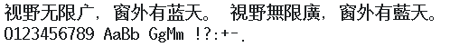

字样资料 / Nokia 9210C
Nokia 9210C · 19点字面
22,327个映射码位，含20,902个非空CJK汉字；全部6,763个GB2312汉字与严格Big5编解码器所映射13,061个汉字均非空。同层95个可打印ASCII完整，空格保留字进。不是完整Unicode或GB18030覆盖声明。 · 20×20 · 简体、繁体
放大观察 · 3×

原尺寸 · 1×
来源与字样信息
- 家族
- Nokia 9210C
- 排版说明
- 统一两行：第一行按实际简／繁Unicode取字，第二行是同一GDR层原生ASCII。保留每字原始advance、左右bearing和ascent，使用20px原生行字格；画布外边4px、行间4px仅为样图布局，不拉齐字号、不补字、不裁字框。width/cellWidth记录常用汉字字进，西文可不等宽；GDR层最大宽度21px另记。
- 字符框
- 20×20 px
- 字面／墨迹
- 19×19 px
- 字符范围
- 简体、繁体
- 样本文字
- 视野无限广，窗外有蓝天。 視野無限廣，窗外有藍天。
- 拉丁样文
- 0123456789 AaBb GgMm !?:+-.
- 覆盖说明
- 22,327个映射码位，含20,902个非空CJK汉字；全部6,763个GB2312汉字与严格Big5编解码器所映射13,061个汉字均非空。同层95个可打印ASCII完整，空格保留字进。不是完整Unicode或GB18030覆盖声明。
- 缺字
- 样文无缺字
- 样张类型
- 原生20高字格，典型汉字19×19墨迹；简繁实际码位及同层ASCII。
- 风格
- 未分类
- 用途
- 设备界面
- 字形来源
- RAE-3中国版36.13固件，内文日期07-03-02（2002-03-07）；从通过CRC及654个传输块校验的中文PPM静态读取Linda.gdr。中国／台湾／香港三个PPM中的GDR逐字节相同；损坏MCU未使用。GDR直接存储原生1-bit行压缩点阵，不执行刷机程序、不矢量取模。Linnea/Linda仅是资源文件名，不作为设计来源或作者证据。
- 授权状态
- 未确认开放再分发授权
- 许可说明
- 第三方公开存档不等于再分发许可。仅展示固定小样图、聚合研究报告和无字模离线脚本；不公开完整ROM、固件、GDR、BDF或任何字库子集，使用与再分发仍受原权利约束。
- 说明
- 典型汉字墨迹19×19，汉字字进20px、原生行字格20高。47个具名字库层中45层覆盖完整GB2312汉字；15点墨迹层最高6/6763（0.08872%），17/19点墨迹层在实际共同码位中均未见同形。具名完整字符层比对与当前目录固定样字检查分开记录，不宣称对所有当前／已撤字库完成整库查重，也不证明手工绘制历史。
- 获取方式
自行取得并确认有权处理匹配SHA的本地输入；脚本支持P908 PD1/GDR及9210C SFX/中文PPM/GDR，仅离线生成这四款固定两行PNG及聚合覆盖报告。不联网下载、不执行固件、不导出完整字体或子集。
- 来源
- Twister 手机固件历史存档资料页
- 原生证据
说明：输入SHA及结构边界校验；Unicode段、内联8字节指标与LSB先行RLE直接解码，原生字进、bearing、ascent保留。两层版本分别锁定，不能推广到所有GDR。
source_sha256：4cee557f8edb16c096e708d13cc24ecd7ae7461f25b27ae46e57c925aa5a69f4
gdrVersion：39
faceUid：0x10005505
mappedCharacters：22327
nonblankCjk：20902
gb2312Han：6763
big5Han：13061
printableAscii：95
ascent：18
layerMaxWidth：21
typicalHanAdvance：20
typicalInkOnly：True
查看原生设计来源
字体使用与再分发按原来源许可执行。